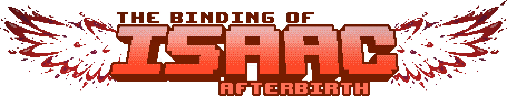

ISSAC

Isaac es un niño que huye al sótano de su casa luego de que su madre,
convencida por una voz divina, intenta sacrificarlo en nombre de Dios.
En su descenso, enfrenta horrores grotescos, visiones de su trauma, y
versiones distorsionadas de sí mismo. The Binding of Isaac mezcla
acción y exploración con un profundo simbolismo religioso, culpa,
miedo y muerte. Cada muerte es un renacer... cada partida, una
pesadilla distinta.